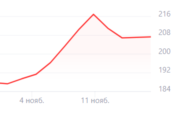

Письма Уоррена Баффета. Часть 1
Уоррен Баффет не писал каких нибудь книг, или курсов, открытых на общий доступ для получения знаний. Но он писал письма инвесторам товарищества раз в пол года, в которых писал о рынке, правилах, и вообщем о азах инвестиций. Поэтому, я начинаю еженедельную рубрику где буду рассказывать о содержании этих писем, с подробными обьясниниями. Сегодня будет письмо 18 января 1963 прро Христофора Колумба, и королеву Изабеллу. Королева потратила на экспедицию Колумба с открытием нового континента 30 тысяч долларов. Как пошутил Уоррен: "Если не оценивать стоимость морального удовлетворения , полученного в результате открытия нового полушария, то следует признать, что даже несмотря на доступ к новым территориям, в целом сделка не дотягивает до покупки второй IBM". Забавно, правда? Также "Если бы королева Изабелла вложила эту сумму под 4% годовых, то ей это должно было принести 2 000 000 000 000 долларов." (Два триллиона долларов), также кто не понял данная сумма к 1963 году. А ведь представьте, если бы она вложила под 8% годовых. На этом все!
Ситуация на рынке
Поговорим про падение цен на рынке. Падение цен происходит каждые несколько лет, но сейчас это выделяют все сильнее, в основном в связи с выборами в США. Золото в этом году находилось в пике своей цены, но с начала месяца начал активно падать. Инфоцыгане начали сразу продвигать свои курсы за невероятные цены(Николай просит 150 баксов). Ситуация вполне обычная, как говорится, все под контролем, все нормально. Будем смотреть дальнейшее продвижение событий. 17.11.2024 19:00
Московская биржа(MOEX)
Сегодня поговорим о акциях Московской биржи. Как обычно начнем с компании. Московская биржа - организатор торгов ценными бумагами, драгоценными металлами, зерном, сахаром. Была основана в 1992 году. Капитал 49.02 трлн рублей. Перейдем к акциям, стоимость акций на 16.11.2024 составляет 206 рублей. Дивиденды на выплату 13.06.2024 составили 7.1% (17.35 рубля). На долгосрочную перспективу они также подходят отлично, стабильная выплата дивидендов, достойный рост стоимости акций. 16.11.2024 19:00
Инфоцыгане делают предсказание рынка!
Всё чаще и чаще я вижу как разичные инфоцыгане делают предсказания рынка, тем самым направляя доверчивых пенсионеров в большую бедность. Сейчас я вижу на своих глазах видеоролик, где человек дал предсказание: золото упадет в цене настолько, что в нем не будет никакого смысла в последущее инвестирование. Про это промолчу, спад цен на золото происходит практически каждые два года, такой курс как сейчас был в конце 2022 года. Также, что BlackRock будет ждать полная перестройка, несущая изменения в сторону ценных бумаг. Далее были слова: "После грядущих перестроек в акции лезть близжайшие десять лет не нужно." Эти слова капитального инфоцыгана не несут никакого смысла. Даже если нами любимый метод долгой перспективы не будет приносить наиболее быструю прибыль, возможно приобрести акции во время полного спадения, и держать их до тех пор, пока они не вырастут в цене. А если хочется прибыли в более быстрое время есть метод - трейдинга. Никто его не отменял. Николай с НН канала, категорически не нужно ему лезть в ценные бумаги. Как говорил Уоррен Баффетт: "Акции это сила" 15.11.2024 15:00
Сбербанк(SBER)
Сегодня поговорим про Сбербанк. Начнем с компании - Сбербанк это самый крупный банк России. Около 87.1% населения страны пользуется этим банком. Сбер был внесен в список системно значимых кредитных организаций. Начнем о акциях. Стоимость на 13.11.2024 составляет 258.6 рублей за один экземпляр. Дивиденды на выплату 10.07.2024 составили 10,55% (33.3 рубля). Для их покупки на долгосрочную перспективу они подходят отлично, так как имеет устойчивое положение, генерирует постоянный доход. Уоррен Баффетт говорил: «Покупайте только то, чем вы будете владеть, если рынок закроется на 10 лет». Сбербанк отлично подходит для долгосрочного владения. 13.11.2024 19:00
Ценные бумаги - что это? Словами легенды.
Сегодня я буду объяснять рынок словами легендарного инвестора - Уоррена Баффета. Он всю свою карьеру, говорил и говорит, что главное в покупке ценных бумаг - долгосрочная перспектива. Множество его цитат связано с этим, например: «Если вы не готовы владеть акцией 10 лет, даже не думайте о том, чтобы владеть ею 10 минут», «Фондовый рынок — это инструмент для переноса богатства от нетерпеливых к терпеливым». Его словами: «Не пытайтесь предсказать, что будет делать фондовый рынок — это напрасная трата времени» он объяснял, что кратковременные колебания предсказать невероятно трудно, практически даже невозможно. А смотря на долгосрочную перспективу анализируя можно добиться хорошего предсказания будущего компании и её ценах бумаг. Также про предсказание Баффет говорил: «Лучше быть приблизительно правым, чем точно ошибаться» - эта фраза означает, что важно не пытаться добиться идеальной точности, а принимать разумные решения, основываясь на фундаментальных показателях. При анализе главное учитывать все важные факторы, не используя при этом прошлое компании. Следует учитывать отрасль компании, саму компанию и положение отрасли на рынке. Уоррен говорил: «Покупайте акции так, как будто бы вы покупали бизнес целиком». Эти слова подчеркивают необходимость анализа ценных бумаг и её компании. «Никогда не инвестируйте в бизнес, который вы не понимаете» особо важно разбираться в отрасли компании, которой вы хотите приобрести акции. Также поговорим о дивидендах. Дивиденды, это выплаты доли прибыли компании, обычно, один или два раза в год выплачивается часть прибыли компании, рассчитывающаяся из количества акций, их стоимости, видом отрасли. Дивиденды могут и отсутствовать, это стоит заранее узнать прежде чем приобретать акции с расчетом на дивиденды. В среднем это от 2 до 12 процентов от стоимости ценной бумаги. У разных брокеров разная дата выплаты дивидендов. Например у официального брокера компании выплата дивидендов дольше в среднем на месяц, чем у брокеров больших компаний (Т-Банк, Сбербанк и т.д.). 12.11.2024 15:00